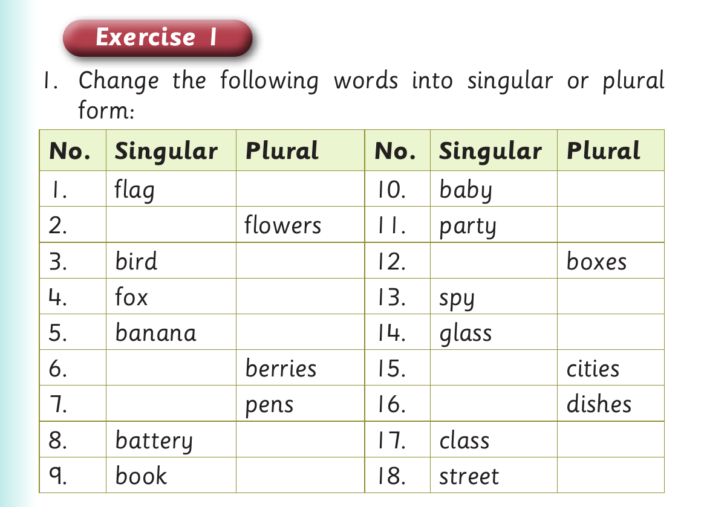

Singular and plural forms - dialogue and Exercise 1
Exact visual panel 1 of 4 from this source page. The page uses visuals as follows: Small fruit pictures beside the dialogue show mangoes, bananas, oranges and papayas.
Ali : I like mangoes.
Ann : What other fruits do you like?
Exact visual panel 2 of 4 from this source page. The page uses visuals as follows: Small fruit pictures beside the dialogue show mangoes, bananas, oranges and papayas.
Ali : I also like bananas.
Ann : What about you?
Exact visual panel 3 of 4 from this source page. The page uses visuals as follows: Small fruit pictures beside the dialogue show mangoes, bananas, oranges and papayas.
Ali : I like oranges and papayas.
Ann : How does a papaya taste?
Ali : It tastes sweet.

Exact visual panel 4 of 4 from this source page. The page uses visuals as follows: Small fruit pictures beside the dialogue show mangoes, bananas, oranges and papayas.
Exercise 1
1. Change the following words into singular or plural
form:
No. Singular Plural No. Singular Plural
1. flag 10. baby
2. flowers 11. party
3. bird 12. boxes
4. fox 13. spy
5. banana 14. glass
6. berries 15. cities
7. pens 16. dishes
8. battery 17. class
9. book 18. street